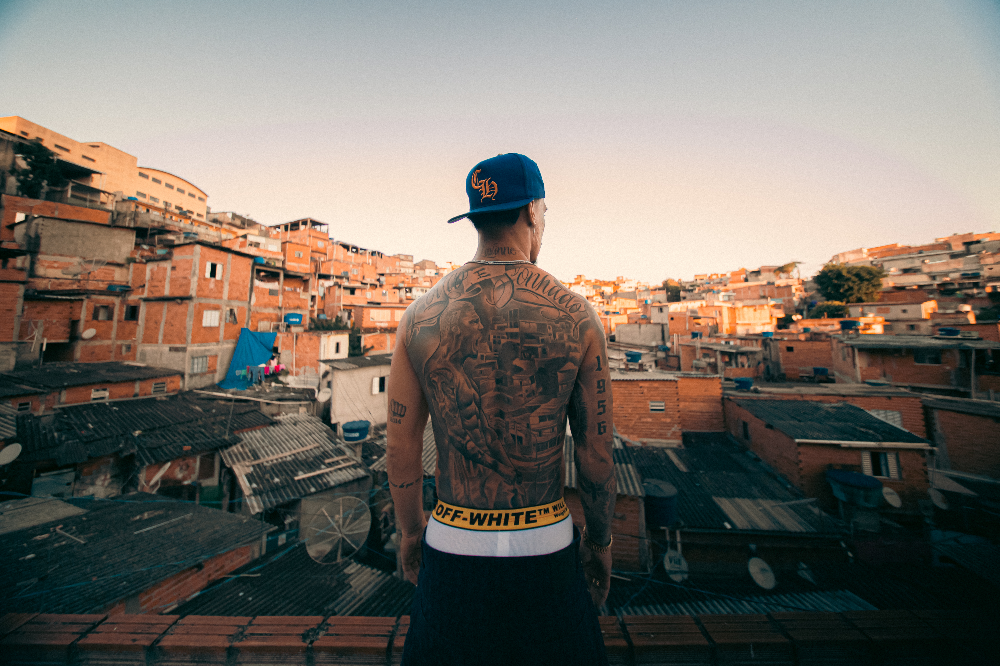
Longa ou série · formato em aberto
O Iluminado
O que é o doc
Um documentário exclusivo que acompanha Antony em um dos momentos mais decisivos e pessoais da sua carreira.
Estágio avançado, disponível para decisão de aquisição imediata.
Quem é Antony
Da favela a um dos brasileiros mais visados do futebol europeu, Antony Santos construiu uma trajetória marcada por ascensão, pressão e recomeços. Uma jornada que colocou à prova não apenas sua carreira, mas também sua identidade.
Revelado pelo São Paulo, Antony ganhou destaque no futebol europeu, passou por grandes clubes e chegou à Seleção Brasileira. Mas, por trás dos holofotes, existe uma história de desafios, escolhas, superação e transformação, a trajetória de um jogador que precisou se reinventar para continuar avançando.
Ponto de partida
A origem que o filme volta a registrar, com câmera dentro.
A explosão
Exposição máxima, pressão máxima, tudo ao mesmo tempo.
O reencontro
Onde a história volta a respirar e o arco se fecha.
A história · o conflito central
Tudo aconteceu rápido demais: o sucesso, a exposição, os grandes clubes e a pressão de estar sempre à altura das expectativas. Quanto maior se tornava o jogador, maior parecia ser a distância entre o Antony que o mundo conhecia e o garoto que veio da favela.
Entre cobranças, críticas e a necessidade constante de provar seu valor, surge uma desconexão com suas próprias raízes. O futebol, que um dia representou liberdade e sonho, passa a carregar também o peso da exposição e das expectativas.
O arco acompanha essa distância se abrindo e, no fim, o caminho de volta. Não como um retorno ao passado, mas como uma reconexão com suas raízes, sua história e com quem Antony sempre foi por trás do jogador.
A voz que conduz
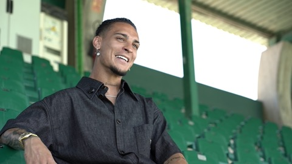
Família · núcleo emocional
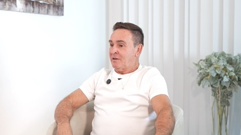
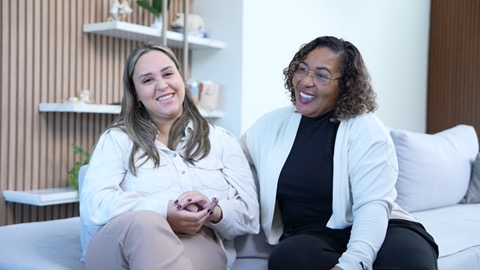
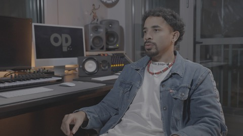
Vestiário e carreira em campo
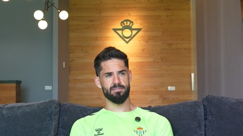
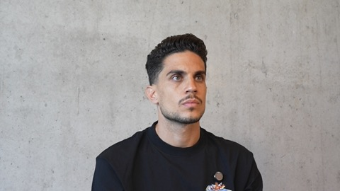
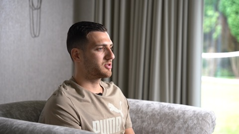
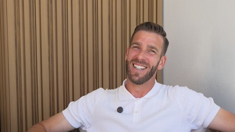
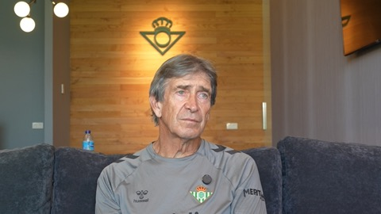
Mercado, bastidores e decisões
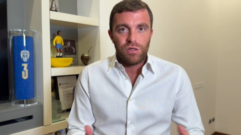
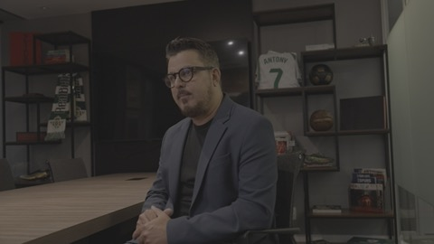
Nenhum clube participa oficialmente do projeto. O acesso é do lado do atleta — relato pessoal, sem filtro institucional.
Estrutura da narrativa · três movimentos
A saída da favela e a explosão de carreira no Brasil, Holanda, Inglaterra.
A pressão, a exposição e a distância crescente do Antony original.
A reconexão com as raízes, encerrando o arco com redenção.
Por que esse material é diferente
Imagens 100% exclusivas, incluindo cenas filmadas nas raízes dele, na favela.
Filmagem realizada na Inglaterra e na Espanha, cobrindo as duas pontas da carreira.
Um filmaker acompanhou Antony durante todo o processo, acesso contínuo, não pontual.
Trailer já pronto, comprovando qualidade de imagem, ritmo e força narrativa.
Acesso em múltiplas camadas: família, vestiário, mercado e bastidores jurídicos.
Tom autoral e intimista, no território dos documentários de atleta que unem alta performance esportiva a uma história pessoal profunda.
Estágio do projeto
O material mais sensível e valioso já foi filmado: as cenas na favela, que ancoram emocionalmente toda a história.
Formato final e data de lançamento seguem em aberto, para se adequar ao catálogo da plataforma parceira.
Potencial de alcance
A origem e a maior base de fãs, o mercado que reconhece a favela na tela.
O auge da exposição global e o pico de cobertura de imprensa.
O capítulo atual da carreira, com o elenco do filme dentro do vestiário.
TikTok
Destaque geral
Uma audiência de 16,7 milhões de seguidores, com mais de 60 milhões de visualizações somando Instagram e TikTok.
Fechamento